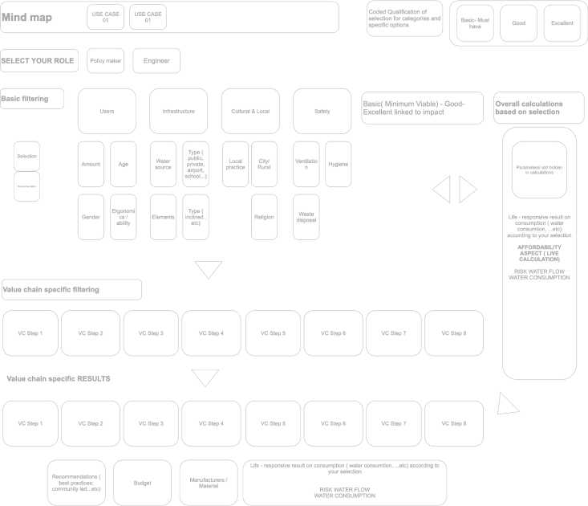
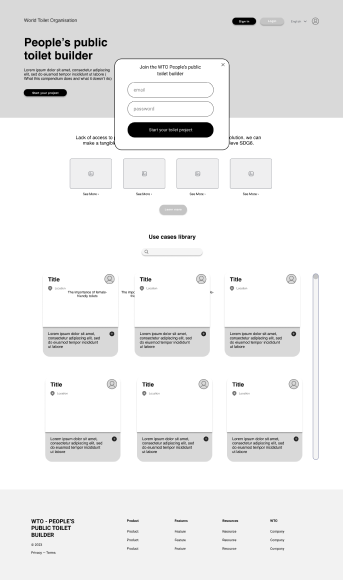
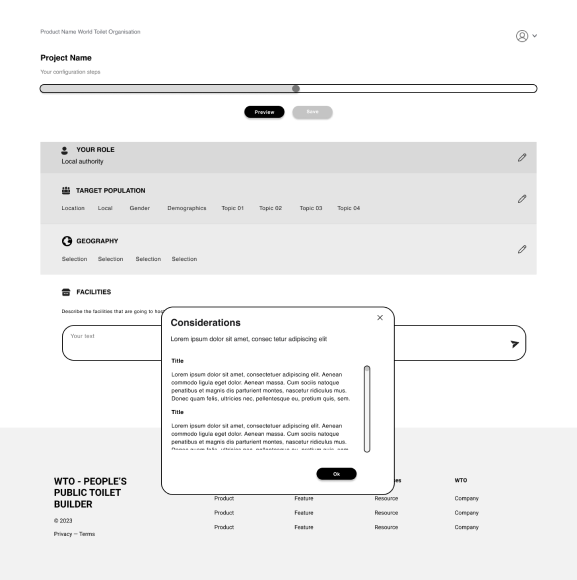
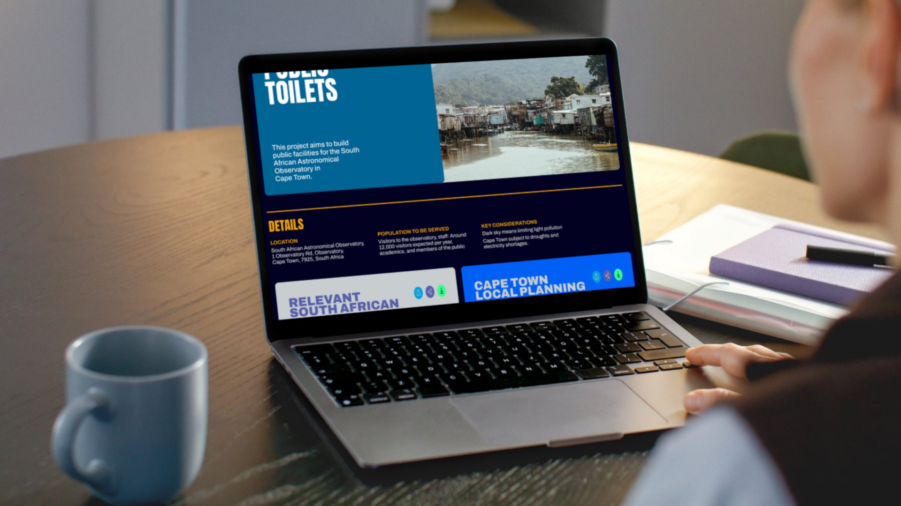

The world's first standardised compendium for toilet design
The People's Public Toilet Builder is a user-centric digital platform aiming to aid and promote good public sanitation systems. Machine learning and crowd-sourced information are leveraged to assist professionals like architects in making informed decisions when planning toilet projects.
3.4 billion people lack access to clean, safe and accessible sanitation services. Local leaders and officials do not have enough information to build sanitation systems.
Interviews with various stakeholders in the value chain were conducted across Asia, North America and Africa. User journeys were then mapped and feedback incorporated into our vision.
Current compendiums, use-cases and standards were analysed to better understand requirements for the project and what "makes a successful project."

The flow was designed to ensure user-centred design decisions would be baked into the building process. The report and questions were catered to the user's role — for example, an architect may get design guidelines, and a project officer, legislation.
Prototypes were constructed and used to gain feedback from users and other stakeholders in the process. This was useful in keeping the project aligned to its goals.


The People's Public Toilet Builder had been taken forward to the implementation stage with the aid of the Gates Foundation as well as SuSanA and GIZ collaborators, however has since been stopped. This project would have been the world's first comprehensive toilet compendium and has great value to the hygiene and safety of millions across the world.
